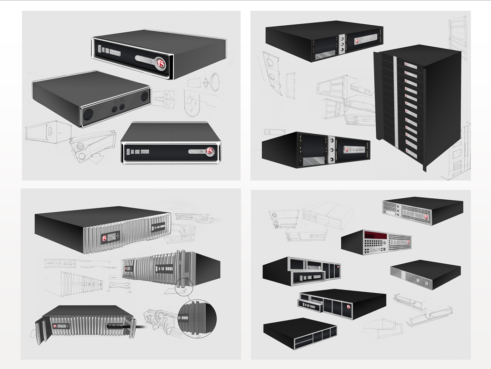
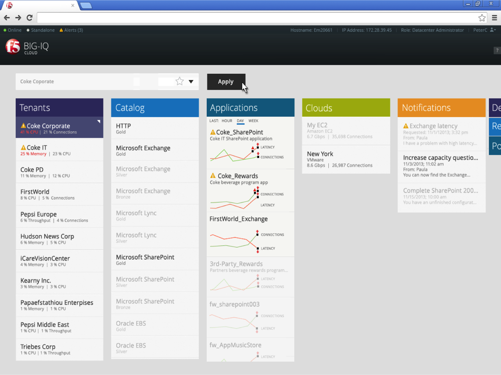

NETWORK COMPLEXITY
F5 Networks builds application delivery controllers and network infrastructure that powers the world's largest enterprises. Network administrators faced overwhelming complexity when configuring, monitoring, and troubleshooting their infrastructure across multiple datacenters.
The challenge was creating a delightful user experience for highly technical users managing mission-critical infrastructure—making the complex simple without dumbing it down.
FIVE STAR AWARD
FIVE STAR EMPLOYEE AWARD
F5 Networks' most prestigious employee award for significant contributions to the company
GLOBAL VISIBILITY
Designed dashboard interfaces that give network administrators instant visibility into their global infrastructure—datacenters, applications, devices, and health status at a glance.


NETWORK VISUALIZATION
Created innovative visualization concepts for understanding complex network topologies and server pools—turning abstract infrastructure into tangible, interactive experiences.

POLICY & APPLICATION BUILDERS
Designed visual builders that allow administrators to configure complex network policies and applications through intuitive drag-and-drop interfaces.


HARDWARE DESIGN
Led industrial design for F5's network appliance hardware—rack-mounted servers and blade systems that house the network infrastructure.


MOBILE CLIENTS
Extended the network management experience to mobile devices, allowing administrators to monitor and respond to issues on the go.


IMPACT
- Won Five Star Award — F5's most prestigious employee recognition
- Created innovative BIG-IQ UI paradigm adopted across F5 products
- Led full UX discipline including Design, Research, and Industrial Design
- Transformed complex network configuration into intuitive visual experiences
- Designed hardware industrial design language for network appliances
- Extended enterprise capabilities to mobile platforms
Related Patents
- Methods for Managing a Network Environment #14/215,325
What Colleagues Say
"Daan is easily the best UX leader I have worked with. He brings instant credibility with his structured thought process and his ability to communicate to engineers in a manner that they can relate to. I have become a better UI engineer as a result of his tutelage."
"Daan is a stellar design leader, with the ability to quickly filter the noise and find the signal, even in the most large-scale products and complex user scenarios. He has a solid track record of building UX teams within organizations that really do need them."